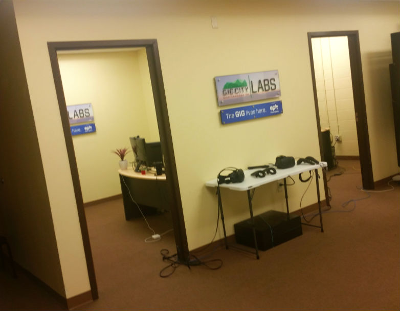

ViatoR VR Opens Up Chattanooga Virtual Reality Lab!

ViatoR VR Labs is officially open! Thanks to the helpful people at the Hamilton County Business Development Center and our Mozilla grant, we now have a physical precense in our community. In this space, we will be able to develop and test our language learning platform and future VR products. We also plan on holding community events, such as workshops, lectures, and meetups, so people in Chattanooga who are excited about VR can come by and try it out!